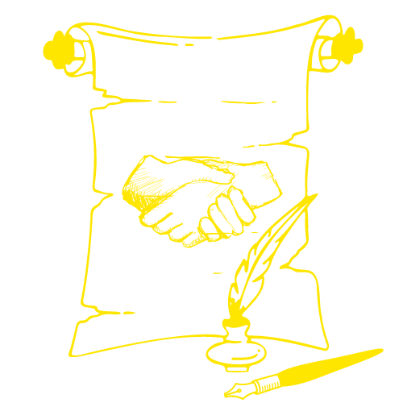

Description: Mystra is the goddess of magic and arcane knowledge. She is seen as the patron of wizards and those who seek to understand the mysteries of the universe.
Tendency: Neutral
Symbols: Eye, sphere, runes
Domains: Arcana
Kelemvor, the Judge
Description: Kelemvor is the god responsable for the cicle of life. He is seen as a impartial god who judges the souls and ensures that life and death are respected.
Tendency: Lawful Neutral
Symbols: Balance, lemniscata (infinity)
Domains: Life, Death, Grave, Order
Moradin, the Maker
Moradin is the god of the forge, and is revered by dwarves and other smiths. This deity is associated with craftsmanship, industry, creation and protection.
Tendency: Lawful Good
Symbols: Anvil, hammer, shield
Domains: Forge, Order
Velsharoon, the Decaying
Velsharoon is the god of sickness and the dead. He is associated with plague, bodies, rot and the undead.
Tendency: Neutral Evil
Symbols: Fly, rat, skeleton
Domains: Death, Grave
Heliograf, the Sage
Heliograf is the god of knowledge, wisdom and vision. He is revered by scholars, librarians, and other seekers of knowledge. He is a wise and learned deity, who values the pursuit of knowledge above all else.
Tendency: Neutral
Symbols: Eye, book, scroll
Domains: Knowledge, Light
Niamh, the Mother
Niamh is the goddess of life, harvest, house and family. She is worshipped by farmers, families, and other good-hearted people. She is a nurturing deity, who values growth, harmony, sobriety and routine.
Tendency: Neutral Good
Symbols: House, wheat, bell
Domains: Life, Peace, Nature
Pelor, the Bright
Pelor is the god of the sun, peace and healing. He is seen as a benevolent deity who bringslight and warmth to the world, and is the patron of those who seek to bring hope and comfort to others. His tendency is good and his symbol is a sun with rays.
Tendency: Lawful Good
Symbols: Sun, cross
Domains: Light, Peace, Life
Cendelion, the Free One
Cendelion is the god of nature and the wilderness, worshipped by hunters, rangers, and other protectors of the wilds. He is a free-spirited deity, who values the untamed power of the natural world.
Tendency: Chaotic Neutral
Symbols: Leaf, waterfall, antlers, horns
Domains: Nature, Tempest
Erathis, the Dealer

Erathis is the goddess of contracts, deception, pride, greed and lies. She is seen as a cunning deity that always finds a way to benefit with her deals and manipulation.
Tendency: Lawful Evil
Symbols: Contract, closed hands
Domains: Order, Trickery
Shinui, the Atrocious
Shinui is the goddess of massacre, envy, pain and vengeance and treason. This deity is associated with murders and other human ills. She is often worshipped by those capable of bad deeds.
Tendency: Chaotic Evil
Symbols: Skull, thorn, fang, claw
Domains: Death, Trickery
Brahmer, the Innkeeper
Brahmer is the god of freedom, drinks, parties, adventures, games and heroes. Brahmer is about everything that happens in a tavern. He is worshipped by adventurers, drunkards and wanderers.
Tendency: Chaotic Good
Symbols: Tankard, barrel, cloak and sword
Domains: Life, Trickery
Umbra, the Shadow Lady
Umbra is the goddess of shadows, secrets, greed, mystery and Moon. She is seen as a nocturnal deity who dwells in the dark, and is the patron of those who use the darkness and the ones who seek to understand the unknown.
Tendency: Chaotic Neutral
Symbols: Shadow, moon, dagger
Domains: Twilight, Death
Sandoq, the Mighty
Sandoq is the god of battle, strength, weapons and boldness. He is seen as a deity who revels in the thrill of combat, and is the patron of those who seek to test their might in battle.
Tendency: Chaotic Neutral
Symbols: Crossed weapons
Domains: War, Forge, Tempest
Arta, the Catharsis
Arta is the goddess of beauty, art and love. She is a deity that represents everything that is beautiful in the world and in the people. Lovers and all kinds of performers worship Arta.
Tendency: Neutral Good
Symbols: Heart, mask, music notes, feather, oud
Domains: Light, Knowledge
The Old One
The ancient god that was banished by the others. He represents destruction, starvation, disaster and the end.
Tendency: Chaotic Evil
Symbols: Dark flame, void, tentacles
Domains: Death, Tempest